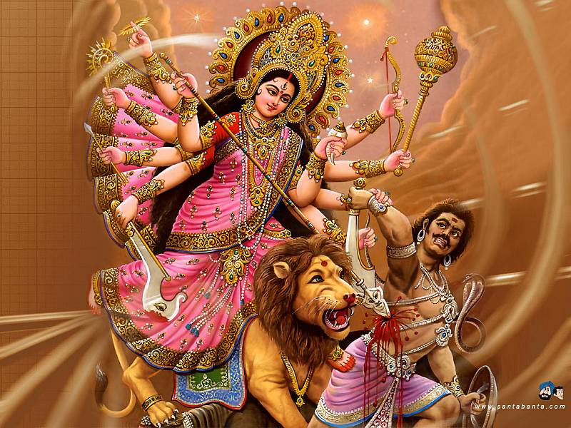

Maha Navami is observed on the ninth day of the Shukla Paksha (waxing phase of moon) of Ashwin month. The day begins after the end of Sandhi Puja. Maha Navami rituals are the final rituals associated with Durga Puja. "Maha Arti" that is considered a formal end of religious customs. Merriment, music and dance fill the rest of the day. On Maha Navami a major bhog is held and Prasad is offered to Goddess Durga and this bhog prasad is shared by devotees.
The Navami night passes Uma will have to leave her father's house for her husband place. The next day is Durga Murti Visarjan or immerson.